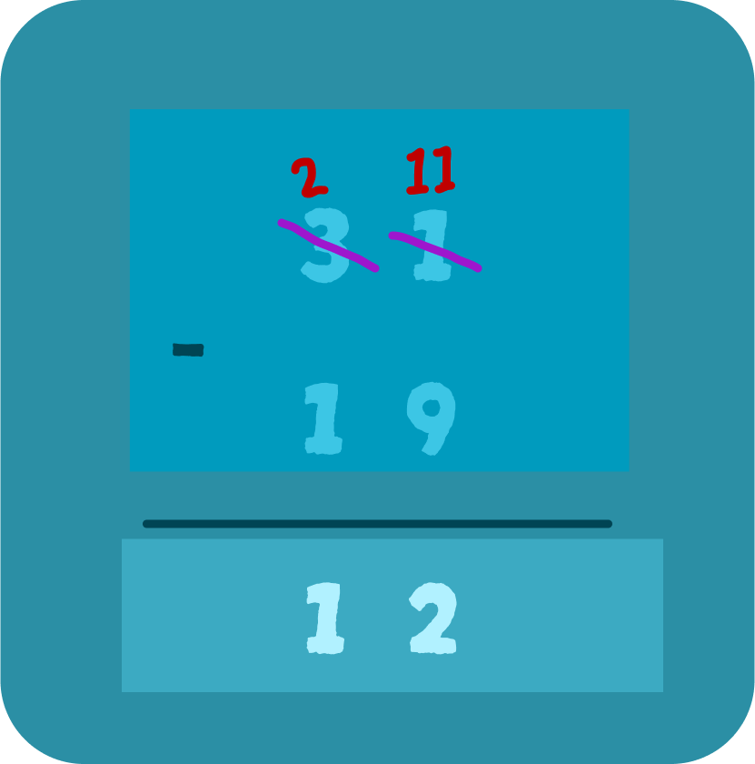

Substracting 2 Digits
Regrouping in Maths :
This process is called regrouping as we are regrouping numbers or rearranging them into their place value to carry out this process. When we use regrouping in subtraction, it is also sometimes called borrowing.
Stratigies to use in Substracting 2 Digits
1-Subtraction with Regrouping:
Let us understand subtraction using this regrouping example, which includes finding the answer to the expression 31 − 19.
Here, we first subtract the unit place digit of the number in the lower slot with the upper slot. If the number in the lower slot is larger than the number in the upper slot, regrouping takes place, also called borrowing. In this case, we subtract one from the tens place digit from the upper slot number and write the remaining number above it, that is, we take
1 from 3 making it 2 which we wrote above 3 while this 1 that we subtracted is “borrowed” to the unit place, making it a 10 and adding it to the unit place existing number, giving us a two digit number. In simpler words 10 is borrowed from the tens place digit and added to the unit place digit. In the above example, 10 is added to the unit place
Now, we move on to the real subtraction of the two numbers. The number of the unit place of the upper slot can now be subtracted from the unit place number of the lower slot, i.e. 11−9 giving us 2. While we normally take the remaining number from the upper slot i.e. 2 and subtract the lower slot number from it, i.e., 2−1, giving us 1 which leaves us with 12
